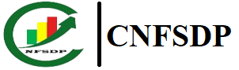

Introduction au Machine Learning
Centre National de Formation en Statistique, Démographie et Planification · Brazzaville
Licence 3 · Semestre 5 · UE Informatique IV · 2026-2027
Rois Céti DIMBAMBA · Ingénieur statisticien économiste · Actuaire · CV en ligne
Avant le premier cours
Lire le polycopié du chapitre 0 et faire le TP0 (installation de Python, VS Code et Git), ou l'ouvrir directement dans Google Colab.
Chapitres et TP
| Chapitre | Séance | Supports |
|---|---|---|
| 0 · Les outils mathématiques du cours | chez soi | PolycopiéTP0 · Colab |
| 1 · Fondements du machine learning | mer. 14 octobre 2026 · 2 h | DiapositivesTP1 · Colab |
| 2 · Apprentissage supervisé : régression | ven. 16 octobre 2026 · 2 h | DiapositivesTP2 · Colab |
| 3 · Classification et méthodes d'ensemble | mar. 20 octobre 2026 · 3 h | DiapositivesTP3 · Colab |
| 4 · Apprentissage non supervisé | jeu. 22 octobre 2026 · 3 h | DiapositivesTP4 · Colab |
| 5 · Projet de bout en bout, interprétabilité et éthique | sam. 24 octobre 2026 · 3 h | DiapositivesTP5 · Colab |
Les corrigés des TP sont ici. Dans Colab, enregistrez une copie dans votre Drive pour garder votre travail.
Projet de groupe
36 étudiants, 9 groupes de 4 constitués par l'enseignant, un thème par groupe, sur l'Enquête démographique et de santé du Congo 2011-2012. Remise du rapport et du notebook : dimanche 22 novembre 2026 ; soutenances : samedi 28 novembre 2026. Tout est dans le guide du projet.
Guide du projetCodes de démarrage · ColabValidation croisée · Colab
Les données DHS ne sont jamais déposées sur GitHub ni sur aucun site public. Elles sont remises par l'enseignant aux seuls étudiants déclarés à DHS, qui signent la charte d'utilisation. On rend le code et le rapport, jamais les données.
Évaluation
| Épreuve | Poids |
|---|---|
| Projet : rapport de 10 pages et notebook | 60 % |
| Projet : soutenance de 15 minutes | 20 % |
| Participation individuelle (interventions pendant les cours et les TP) | 20 % |
Il n'y a pas d'examen écrit.
Ressources
Dépôt GitHub du cours · Questions (Discussions) · G. James et al., An Introduction to Statistical Learning (accès libre) · Documentation scikit-learn